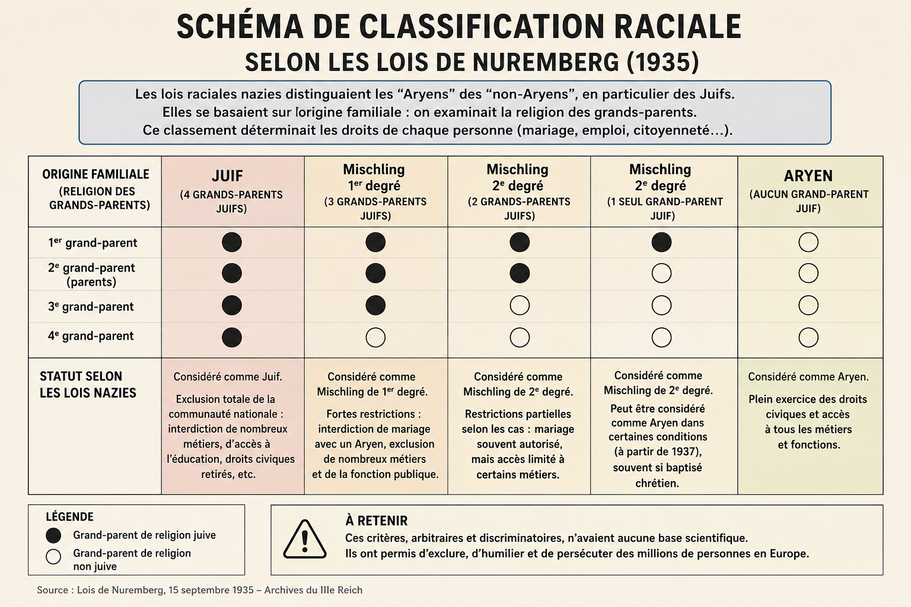

Les lois raciales nazies sont un ensemble de textes juridiques adoptés à partir de 1935 pour exclure, discriminer et isoler des millions de personnes en fonction de leur origine familiale. Elles ont transformé la discrimination en un système légal, appliqué par l’État et ses institutions.
« Les lois raciales nazies transformaient l’origine familiale en critère juridique pour exclure des millions de personnes. »
Les lois de Nuremberg constituent le cœur du dispositif. Elles définissent qui est considéré comme « citoyen » et qui ne l’est plus. Elles retirent des droits civiques, interdisent les mariages et les relations entre groupes définis par le régime, et instaurent une classification fondée sur l’ascendance familiale.
Les lois raciales ne sont pas des mesures isolées : elles s’inscrivent dans un système complet de décrets, règlements et interdictions. L’administration, les écoles, les professions, les lieux publics et les institutions appliquent ces règles, créant une exclusion totale et progressive.
Les lois raciales ont entraîné la perte des droits civiques, l’exclusion professionnelle, la ségrégation sociale et la marginalisation de millions de personnes. Elles ont préparé le terrain pour les persécutions ultérieures, en légitimant la discrimination par le droit.
Aujourd’hui, l’étude des lois raciales permet de comprendre comment un État peut utiliser le droit pour discriminer et exclure. Les musées et mémoriaux rappellent l’importance de défendre l’égalité et la dignité humaine face à toute forme de discrimination légale.